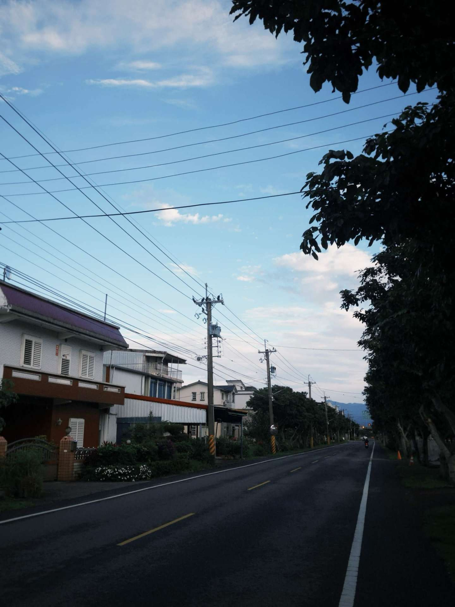
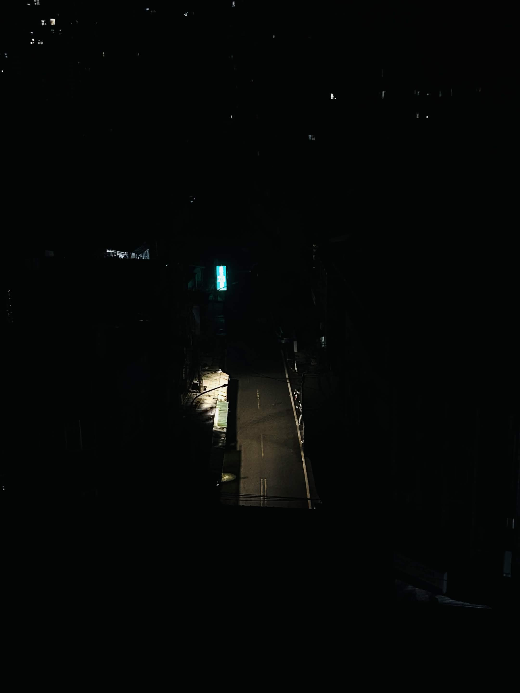
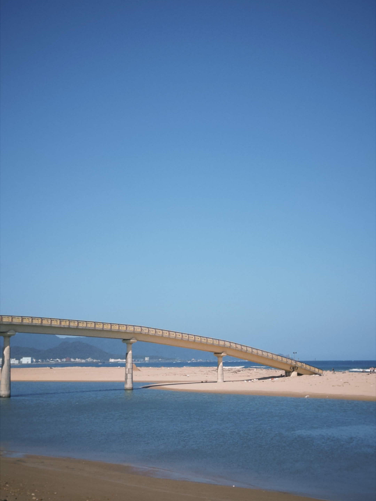

李杰翰
新北市板橋區雙十路二段41巷5號30樓 · 0900528017 ·
d0979580430@gmail.com
我是李杰翰，今年19歲，目前就讀世新大學資訊傳播學系一年級，平時的興趣是打遊戲、看劇、聽音樂、思考人生、打羽毛球，最喜歡的歌手是SZA，另外我也很喜歡拍照去記錄生活。
我是李杰翰，今年19歲，目前就讀世新大學資訊傳播學系一年級，平時的興趣是打遊戲、看劇、聽音樂、思考人生、打羽毛球，最喜歡的歌手是SZA，另外我也很喜歡拍照去記錄生活。
負責審核證券上的張數、戶號、股數的數目是否正確，並利用EXCEL進行表單的製作。
工作主要包含包裹的收寄，搬運上架，盤點，理貨，打理店內環境整潔，更換機台紙張耗損
工作內容涵蓋結帳、補貨、上下架、清潔、製作咖啡、處理包裹貨物、取件寄件等內容
從新北市板橋區莒光國民小學開始，我建立了基礎的學習習慣與人際互動能力。國小階段的學習以基礎學科與團體生活為主，讓我學會遵守規範、與同學合作，也開始培養對學習的基本態度。
進入新北市立中山國民中學後，課業內容變得更加多元且具有挑戰性，我開始意識到時間管理與自主學習的重要性。在這個階段，我逐漸從被動接受知識，轉為嘗試主動整理與理解內容，也在課業與活動之間學習如何取得平衡。
就讀台北市私立大同高級中學後，學習環境更加競爭且多元，我開始面對更高層次的學術要求與自我規劃的壓力。在這段期間，我不僅提升了解決問題的能力，也更清楚自己的學習方式與節奏，同時培養了細心與責任感。
我很喜歡打遊戲，特別是FPS跟魂系遊戲，總時長大概將近800個小時。包含的遊戲有艾爾登法環、艾爾登法環 黑夜君臨、Sekiro、機戰傭兵™VI、Apex 英雄。
魂類遊戲通常以極高挑戰性著稱，主打精確的精力管理與動作節奏，任何輕率都可能導致角色死亡。其核心在於「失敗與成長」玩家需在無數次失敗中摸索敵人的攻擊模式，並擊敗強大 Boss 獲得無與倫比的成就感。
FPS則是在於反應力與操作上稍加要求。玩家必須在毫秒之間完成對準與射擊，任何遲疑都會導致失敗。這種第一人稱視角帶來了強烈的代入感與壓迫感，讓玩家在緊湊的對局中體驗心跳加速的刺激，並透過不斷磨練肌肉記憶來克服高難度對決，獲得極大的成就感。

清晨鄉道筆直延伸，電線交錯天空，光影柔和，日常中帶著淡淡孤寂與歸途氣息

夜色籠罩街巷，昏黃與冷光交錯，寂靜深沉，像城市心跳放慢，瀰漫神秘與疏離
小徑延伸入山，低飽和冷調，靜謐孤寂的自然氛圍
山巒被夕陽染成暖褐色，光影柔和過渡，靜默中蘊藏厚重與安定，像一段沉思，緩慢而深遠

長橋靜靜橫跨水面與沙洲，遠方海天一線，藍色鋪展出遼闊與空靈，時間彷彿放慢，帶來一種自由與遠行的想像
夜色裡煙火炸裂，火星四散飛舞，光影交錯之間充滿爆發力與不確定，像情緒在黑暗中瞬間綻放，短暫卻炙熱